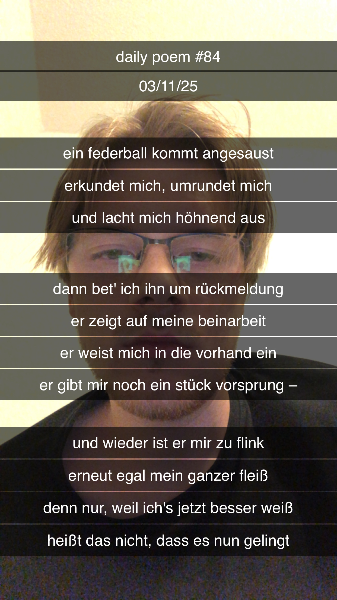

Federball, Digga
[84]Ein Federball kommt angesaust,
Erkundet mich, umrundet mich –
Und lacht mich höhnend aus.
Dann bet' ich ihn um Rückmeldung,
Er zeigt auf meine Beinarbeit,
Er weist mich in die Vorhand ein,
Er gibt mir noch ein Stück Vorsprung –
Und wieder ist er mir zu flink,
Erneut egal mein ganzer Fleiß –
Denn nur, weil ich's jetzt besser weiß,
Heißt das nicht, dass es nun gelingt.
